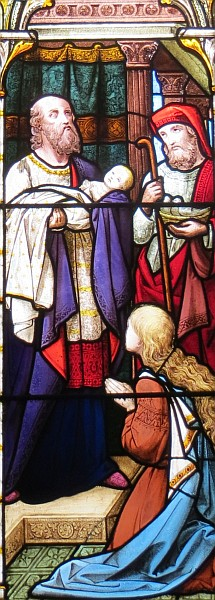

La Bouonne Nouvelle s'lon Luc
Chapitre 2, vèrsets 25-33

Et y'avait à chu temps-là à Jérusalem un houmme tch'avait nom Siméon, et i' 'tait un houmme recta tch'honorait Dgieu et attendait lé r'confort d'Israël, et l'Saint Esprit 'tait auve li.
Et i' savait, par l'Saint Esprit, qu'i' n'mouothithait pon avant d'vaie l'Christ dé Dgieu.
Et, remplyi d'l'Esprit, i' vînt au Templ'ye; et quand les pathents entrîtent auve l'êfant Jésû à seule fîn d'faithe auve li chein tchi 'tait c'mandé par la louai,
Pis i' l'prînt à sa brachie et louangit Dgieu et dit:
Seigneur, Tu laîsse achteu Tan sèrveux s'n aller en paix s'lon Ta pathole,
Car mes ièrs ont veu Tan salut,
Létché Tu'as prépathé d'vant la fache dé touos les peupl'yes;
La leunmiéthe à êcliaithi les nâtions, et la glouaithe dé Tan peupl'ye d'Israël.
Et san péthe et sa méthe fûtent êmèrvilyis par chein qu'nou dithait entouor li.
Vèrsets 29-32
"Achteu j'pouôrrai mouothi heutheux; ch'est en tchi j'l'ai veu coumme tu m'l'as dit. Mes ièrs ont veu l'Saûveux du monde qué tu'as envyé pouor touos les gens. Sa leunmiéthe litha sus touos les païens et i' s'sa la glouaithe d'Israël."
Viyiz étout:
- Nunc Dimittis
- La Bibl'ye
- La Bouonne Nouvelle s'lon Luc: 1
- La Bouonne Nouvelle s'lon Saint Luc, chapitre iun, vèrsets 1-4
- La Bouonne Nouvelle s'lon Luc, Chapitre 1, vèrsets v-xxv
- L'Êvangile sélon Saint Luc, chapitre iun, vèrsets 26-38
- L'Êvangile sélon St.-Luc: chapitre 1 versêts xxvi à xxxviii - eune aut' vèrsion
- L'Êvangile sélon Saint Luc, chapitre iun, vèrsets 26-38 - eune aut' vèrsion
- La Bouonne Nouvelle s'lon Luc, Chapitre 1, vèrsets 39-56
- La Bouonne Nouvelle s'lon Luc: 2
- L'Êvangile sélon St.-Luc: chapitre 2 versêts i à vii
- L'Êvangile sélon St.-Luc, Chapitre deux, Vèrsets 1 à 7- eune aut' vèrsion
- L'Êvangile sélon Saint Luc, chapitre 2, vèrsets viii à xx
- L'Êvangile sélon St.-Luc, Chapitre deux, Vèrsets 8 à 20- eune aut' vèrsion
- L'Êvangile sélon St.-Luc: chapitre 2, versêts viii à xx - eune aut' vèrsion
- L'Êvangile sélon St.-Luc: Chapitre 2, Versêts 8 à 20 - eune aut' vèrsion
- La Bouonne Nouvelle s'lon Luc Chapitre 2, Vèrsets 21-24
- La Bouonne Nouvelle s'lon Luc: 3
- La Bouonne Nouvelle s'lon Luc, Chapitre 3, vèrsets 23 à 38
- La Bouonne Nouvelle s'lon Luc: 4
- La Bouonne Nouvelle s'lon Luc: 5
- La Bouonne Nouvelle s'lon Luc: 6
- La Bouonne Nouvelle s'lon Luc: 7
- La Bouonne Nouvelle s'lon Luc, Chapitre 8
- La Bouonne Nouvelle s'lon Luc: 9
- La Bouonne Nouvelle s'lon Luc: 10
- Lé Bouôn Samathitain
- La Bouonne Nouvelle s'lon Luc: 11
- La Bouonne Nouvelle s'lon Luc: 12
- La Bouonne Nouvelle s'lon Luc: 13
- Luc: 14
- La Bouonne Nouvelle s'lon Luc, 15
- La Bouonne Nouvelle s'lon Luc, Chapitre 15, vèrsets viii-x
- L'Êfant Prodigue
- La Bouonne Nouvelle s'lon Luc: 16
- La Bouonne Nouvelle s'lon Luc: 17
- La Bouonne Nouvelle s'lon Luc: 18
- La Bouonne Nouvelle s'lon Luc, Chapitre 19
- La Bouonne Nouvelle s'lon Luc, chapitre 19, vêrsets 1-10
- L'Êvangile sélon Saint Luc, chapitre 19, vèrsets 42-44
- La Bouonne Nouvelle s'lon Luc: 20
- La Bouonne Nouvelle s'lon Luc, Chapitre 20, vèrsets 20-26
- La Bouonne Nouvelle s'lon Luc, Chapitre 21
- La Bouonne Nouvelle s'lon Luc: 22
- La Bouonne Nouvelle s'lon Luc, Chapitre 23
- La Bouonne Nouvelle s'lon Luc, Chapitre 24
- La Bouonne Nouvelle s'lon Saint Luc, chapitre 24, vèrsets 36-43